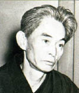

(1899 – 1972)

1968 yılında Nobel Edebiyat Ödülü aldığında bu ödülü alan ilk Japon olan Yasunari Kawabata, duygu yüklü romanları ve cümlelere sinmiş lirizmle tanınan bir yazardır. Modern Japon edebiyatının ülkesi dışında da çok tanınan adlarından olan yazarın birçok romanı Türkçeye de çevrildi.
Duygu yüklü romanların yazarı Yasunari Kawabata (okunuşu: Yasunari Kavabata), 14 Haziran 1899'da Osaka'da doğdu. Babası doktordu, ama dört yaşında yetim kaldığı için büyükbaba ve büyükannesinin yanında yaşadı. Teyzesi tarafından büyütülen bir de kızkardeşi vardı. Kawabata'nın büyükannesi o yedi yaşındayken öldü ve büyükbabası da o on beş yaşındayken hayata gözlerini yumdu. Yazar, tüm yakın akrabalarını yitirdikten sonra annesinin ailesinin yanına taşındı. On sekiz yaşından önce Tokyo'ya gitti ve Tokyo İmparatorluk Üniversitesi yönetimi altındaki bir liseye kaydını yaptırdı. 1920'de liseyi bitirip Tokyo İmparatorluk Üniversitesi'nde okumaya başladı. Modern Japon edebiyatının sesi olan Bungei Jidai dergisinin kurucuları arasında olan Kawabata, gazeteci olarak çalışmaya başladığında edebi metinler yazmaya da devam ediyordu.
1924'te mezun olan Kawabata, bu arada Bungei Shunju dergisine yaptığı edebi katkılar nedeniyle önemli yazarların dikkatini çekmeye başlamış olan bir gençti. Yazarlığının yanı sıra gazeteci olarak da çalışan Kawabata'nın II. Dünya Savaşı sonrası siyasal reformlara ilgi göstermemesi, savaşın kişisel dünyası üzerindeki yıkımlarla ilişkilendirilmektedir.
1927'de yayımlanan İzu Dansçısı adlı kısa öyküsüyle adını duyuran yazar, 1937 yılında yayımlanan Karlar Ülkesi romanıyla Japon edebiyatının devleri arasına girdi. 1949 yılında Bin Beyaz Turna ve Dağın Sesi adlı yapıtlarını tefrika etmeye başlayan Kawabata 1953'te Japon Sanat Akademisi üyesi, 1957'de de Japon PEN kulüp başkanı oldu. Göl (1955), Uykuda Sevilen Kızlar (1960) ve Eski Başkent (1962) romanlarıyla ününü iyice pekiştiren yazar 1968'de, Nobel Edebiyat Ödülü'nü alan ilk Japon oldu.
1972 yılında ocak gazıyla intihar eden Yasunari Kawabata'nın intihar nedeni hakkında birçok görüş öne sürüldüyse de kesin nedeni anlaşılamamıştır. Eşi dahil birçok kimse intihar gibi görünen durumun aslında kaza olduğunu söylese de yazarın Parkinson hastalığına yakalandığı için kendini öldürmeyi seçtiğini söyleyen biyografi yazarları da vardır.
Seçme Romanları: İzu Dansçısı (1926), Karlar Ülkesi (1935/37), Go Ustası (1951/54), Bin Beyaz Turna (1949/52), Dağın Sesi (1949/54), Göl (1954), Uykuda Sevilen Kızlar (1961 –Assos Yayınları, 2003), Eski Başkent (1962)